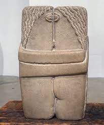

129. The Kiss. Constantin Brancusi. Original 1907-1908 CE Stone.
- Form
- Symbolic, almost Cubist rendering of the male and female bodies
- Simplified carving
- Intertwined and enveloped figures
- Interlocked forms; fused bodies
- Two eyes become one, almost Cyclops-like
- Rough surface contributes to a feeling of naturalism; this is an artistic break from the high polish effect of past sculpture
- Patronage
- Requested by John Quinn, Brancusi’s patron in New York, who admired the small plaster version of The Kiss in the collection of the artist Walter Pach
- Context
- Brancusi worked in Rodin’s studio
- This is the fourth stone version of this subject:
- First version was one of Brancusi’s earliest efforts at stone carving
- Second version was exhibited at the Armory Show
- Third version used as a tombstone in Montparnasse Cemetery in Paris over the body of a suicide victim: a young Russian anarchist
- The artist was asked by a friend of the deceased, who had hilted her, for a marker for her grace
- The artist said take what you want; he took this work
- There may be many more undocumented versions